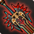
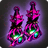
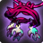
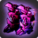
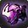
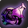
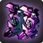
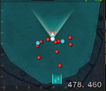
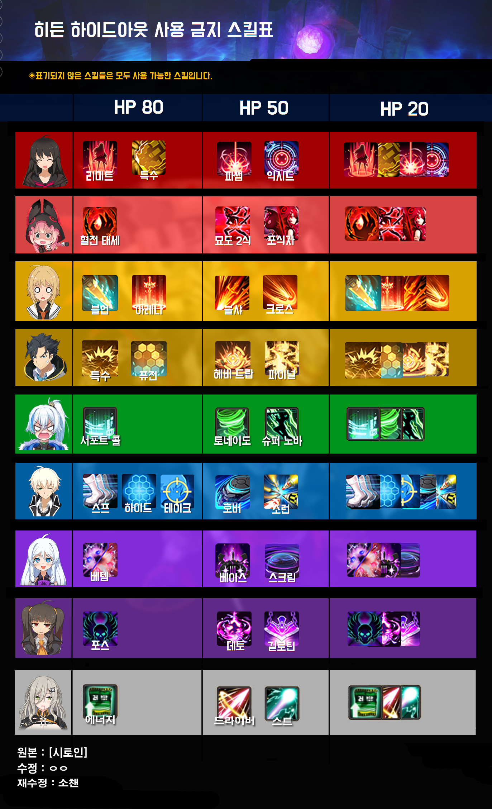
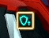

Your first real raid you are going to play. First : the pre-requisites and info needed before playing. -At least level 65 -An AoV EX set -At least 1800 ACCURACY -Some patience If its your first time , prepare revive hearts : Second : the gear and order you should get it. -Weapon : Mandatory first to get and +9 -Accesories :   Mandatory second to get and roll CDR | AS | CRIT -Armor : =Last to get =2sets EX and ST     =ST has more survivability and accuracy bonus in exchange for a decent ammount of DAMAGE =I advise getting ST since its less resource intensive and more beginner friendly Third : mechanics and safe spots. -The middle zone where he always jumps to is the safest spot on map  -Has 3 major phases 80 , 50 and 20 HP -Within those phases some of your skills are BANNED using them results in a team-wide freeze  =Boss has extra damage reduction  =CORE opens and 1 person needs to clear it -Before the first core his moveset is limited to : =Rain (Step into cirlces for immunity buff)=Stomp ->Followed by a teleport Creates and aura of damage on all teammates
=Totem summon Those can either freeze / drain stamina+mana / burn over time -After first core opens his moves expand to =Spin (42 skill prevents damage taken)
=Meteor (stand BEHIND a wall or use EX skill)
=Rush (2 safe spots on the map)
-Most of his attacks stun you , so try to dodge -Gear line priority : -Weapon : PENETRATION | BOSS DMG | CRIT DAMAGE -Armor : COOLDOWN REDUCTION | CRIT RATE | CRIT DAMAGE -Accesories: =Rings : CRIT RATE | CRIT DAMAGE | ACCURACY =Pendant/Earrings : ATTACK SPEED | COOLDOWN REDUCTION